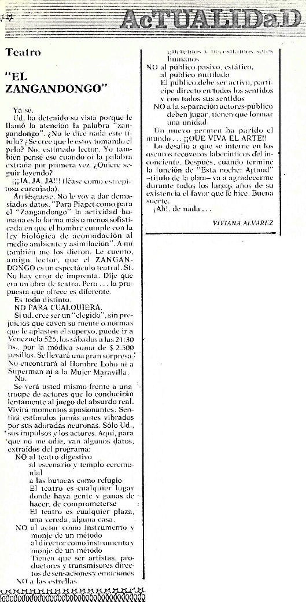

Nota sobre el Zangandongo y "Para cenar: Artaud",
aparecida en mayo del '79 en revista Propuesta (había algunos
errores, pero...¡todo sumaba en esa época!). "Ya sé. Ud. ha detenido su vista porque le llamó la
atención la palabra Zangandongo. ¿No le dice nada este título? ¿Se
cree que le estoy tomando el pelo? No, estimado lector. Yo también pensé
eso cuando oí la palabra extraña por primera vez. ¿Quiere seguir
leyendo? ¡Ja ja ja! (Léase como estrepitosa carcajada). Arriésguese. No
le voy a dar demasiados datos. 'Para Piaget como para el Zangandongo la
actividad humana es la forma más o menos sofisticada en que el hombre
cumple con la ley biológica de acomodación al medio ambiente y
asimilación'. A mí también me los dieron. Le cuento, amigo lector,
que el ZANGANDONGO es un espectáculo teatral. Sí. No hay error de
imprenta. Dije que era una obra de teatro. Pero...la propuesta que ofrece
es diferente. Es todo distinto. NO PARA CUALQUIERA. Si ud. cree ser un
'elegido', sin prejuicios que caven su mente o normas que le aplasten el
superyo, puede ir a Venezuela 525, los sábados a las 21:30 hs. por la
módica suma de 2.500 pesillos. Se llevará una gran sorpresa. No
encontrará al Hombre Lobo ni a Superman ni a la Mujer Maravilla. No. Se
verá ud. mismo frente a una troupe de actores que lo conducirán
lentamente al juego del absurdo real. Vivirá momentos apasionantes.
Sentirá estímulos jamás antes vibrados por sus adoradas neuronas. Sólo
ud., sus impulsos y los actores. Aquí, para que no me odie, van algunos
datos, extraidos del programa:
'NO al teatro digestivo, al
escenario y templo ceremonial, a las butacas como refugio. El teatro es
cualquier lugar donde haya gente y ganas de hacer, de comprometerse. El
teatro es cualquier plaza, una vereda, alguna casa.
NO al actor
como instrumento y monje de un método, al director como instrumento y
monje de un método. Tienen que ser artistas, productores y transmisores
directos de sensaciones y emociones.
NO a las estrellas, queremos
y necesitamos seres humanos.
NO al público pasivo, estático, al
público mutilado. El público debe ser activo, partícipe directo en
todos los sentidos y con todos sus sentidos.
NO a la separación
actores-público; deben jugar, tienen que formar una unidad.
Un
nuevo germen ha parido el mundo...¡¡QUE VIVA EL ARTE!!'
Lo
desafío a que se interne en los oscuros recovecos laberínticos del
inconsciente. Después, cuando termine la función de 'Esta noche:
Artaud'
-título de la obra- va a agradecerme durante todos los largos años de su
existencia el favor que le hice. Buena suerte. ¡Ah!, de nada..."